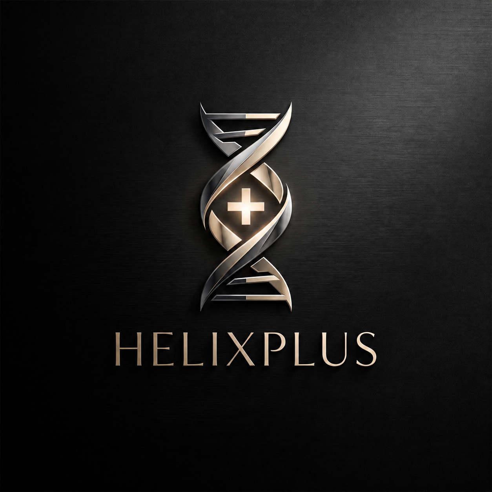

Web・集客
会社サイト、LP、問い合わせ導線、営業資料。

HELiXPLUSHELiXPLUS / IT PARTNER FOR BUSINESS
ホームページ、業務改善、アプリ開発、補助金まわり、社内ネットワーク、営業導線まで。 中小企業の現場で起きるITの困りごとを、相談から設計、実装、運用改善まで一緒に進めます。
CONSULTING CATEGORY
HELiXPLUSのロゴが持つ「つながり」と「積み上げ」の考え方は、ページ上では相談カテゴリの並べ方に反映します。入口を限定せず、Web、業務、開発、インフラ、営業導線をひとつの流れとして見ます。
会社サイト、LP、問い合わせ導線、営業資料。
紙、Excel、電話、LINE、承認、集計。
予約、案件、顧客、レポート、社内管理。
端末、権限、ネットワーク、バックアップ。
CAPABILITIES
中小企業の困りごとは、ホームページ、補助金、業務改善、アプリ、ネットワーク、営業導線がつながっています。HELiXPLUSは、相談を分断せず、必要な順番に整えて形にします。
CASE SIGNALS
START WITH ONE WORKFLOW
現状の業務を聞き、改善できる箇所、作るべきもの、既存ツールで足りるものを切り分けます。
相談する